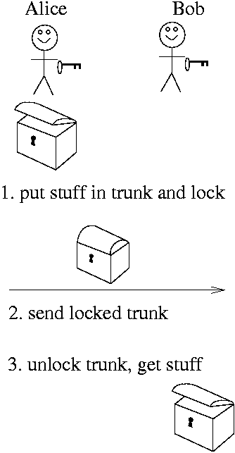
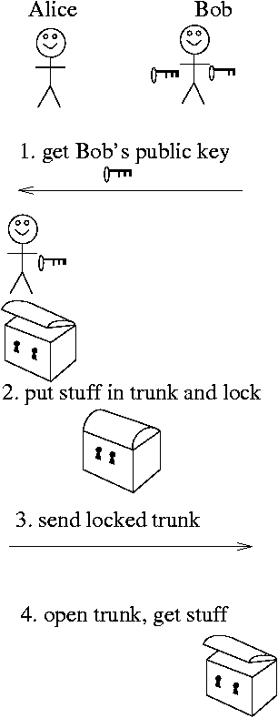

Today, we'll talk about how machines can communicate in a secure way. A little while ago, we talked about analog and digital signals, and this lecture will remind you of that one, but we're talking about a higher level: not just how information gets from point A to Point B, but how it can get there without anyone in between knowing what is being said.
Lots of us had fun with secret codes and such when we were kids. We'd get secret decoder rings in our cereal boxes and make up messages to send to each other. Could be useful if they were intercepted by the teacher! We hope that today's lecture evokes that sense of fun.
A condensed version of these notes can be found here.
When we discuss encryption, it's traditional to name the people involved, just so we can keep things straight. The cast of our little drama is:
The story is that Alice is sending Bob a message through some insecure medium (not whispering in his ear): think postcard or radio. Alice might be a field agent and Bob is her contact at HQ. Alice and Bob might not even know each other: perhaps Alice is trying to persuade Bob to defect, and Eve is trying to find traitors.
The messages might be sent by radio, or phone, or email, or carrier pigeon. All media are potentially insecure. Radio waves can be picked up by other receivers, phone wires can be tapped, as can computer networks. Even carrier pigeons can be captured.
One approach is to put the message in code. Humans have invented lots of codes in history, and code-making and code-breaking have often been pivotal. Indeed, Alan Turing and his code-breakers in England may have done more to win WWII against Hitler than General Patton, because they were able to break the codes sent with the Enigma machine used by the Germans. Similarly, the Navajo Indians, who used their native language as an unbreakable code in the war in the Pacific, contributed greatly to the war effort without ever firing a shot.
Terminology:
Caesar codes are named because Julius Caesar used them to communicate with his troops, so they're hardly new. They're also not particularly hard to break, but if you have to write your message on a postcard, it's better than nothing. The idea is letter substitution. A popular and easy way of doing it is rotating: Imagine the letters of our message are each printed on a wheel, and we simply turn the wheels so each letter is replaced by one that is n letters before or after it in the alphabet. For example, we replace each letter with the one preceding it in the alphabet (and “A” is replaced with “Z”).
Plaintext:
IBM
Ciphertext:
HAL
(You may remember that the computer in Arthur C. Clarke's classic science fiction novel 2001: A Space Odyssey was the HAL 9000. Many people believe this was a thinly veiled reference to IBM, using a -1 rotation code.)
Caesar actually used a rotation of 3, so A was written as D, B as E, and so forth. Thus, “ATTACK” would be sent as “DWWDFN”.
Another popular Caesar code is called rot13 and has been used for many years on the Internet as a way to hide things from inadvertent reading, such as movie spoilers or dirty jokes. You have to decode it using rot13 to read the spoiler or the dirty joke. Rot13 is just a Caesar code incrementing each letter by 13. This is convenient because you can decode using the same software as encoding, since rotating twice by 13 brings a letter back to where it started.
If you want to encrypt using a Caesar code by hand, you can use the
following form. Choose an amount to rotate by, then write your message
using the letter from the cipher alphabet instead of the one from the
plain alphabet — in other words, the one below the one you
really mean. For example, setting rotation to 1, you can
see “B” below “A” and “C” below
“B” and so forth. Setting it to 25, you can see
“H” below “I” and “A” below
“B” and “L” below “M”, giving
“IBM” for “HAL”.
Use the form above to translate some simple words into code. Translate the first two using Caesar's code (rotate by 3) and the last by rot13.
| plaintext | ciphertext |
|---|---|
| BY SEA |
|
| BY LAND |
|
| ATTACK |
|
You can check your answers and try out other Caesar codes using the following form. Note that this form converts the string to uppercase. Also, it only rotates the letters; it leaves the numbers, punctuation and other characters alone. It could be easily re-written to handle more stuff.
So, now you and a friend can exchange secret messages, say by email, just by encrypting them using this form. You just have to agree on a rotation amount (and keep it secret!).
Earlier, we ignored punctuation and anything other than a letter. Obviously, that makes for a bad code. What we really should do is treat all characters the same. How is this done? First, we have to say what a character is.
As you know, everything in a computer is just numbers. How does it deal with characters? As you remember from an earlier lecture, early computer designers agreed on a set of characters and a standard number for each one. For example, A is represented with 65. One such system was ASCII: American Standard Code for Information Interchange. Here's part of the ASCII code:
You read this table just like an addition table. Add together the row and column headers, and you find the numerical value (ASCII code) of the character at the intersection of that row and column.
Note: The ASCII code is not about encryption; it's just a standard for numbering characters. The existence of such a numbering means that we can do rotation codes numerically, like this:
encoded_char = (plaintext_char + rotation_amount) % 128;
ASCII is now being supplanted by UNICODE, which is a vastly larger code, designed to handle all the world's languages.
Breaking
a code (that is, reading encrypted messages without
having the secret information) is
called cryptanalysis.
Caesar ciphers are relatively easy to break, as is any cipher based just on substitution of letters. For example, the most common letter in the ciphertext is probably the encypted form of a very common letter, such as “e” or “t” or “a”. With more sophisticated statistics, and trial and error, both of which computers are good at, it's fairly easy to crack a substitution cipher.
One way to spoil the statistics of a Caesar cipher is to use multiple Caesar ciphers. In other words, suppose we rotate the first letter of the plaintext by 2, the second letter by 0, and the third letter by 19. Then we repeat, rotating by 2, 0, 19, until we're done with the plaintext. Such a technique is called a Vigenere Cipher, mis-attribute to Blaise de Vigenère from the court of Henry III of France in the sixteenth century. It was considered unbreakable for some 300 years!
Another way to think of the Vigenère Cipher is as follows. Write
down a keyword, such as “cat”. Then, use the
index of each letter as the amount to rotate. For example, if the
keyword is “cat”, then we will use a 2 rotation, a 0
rotation, and a 19 rotation (“t” is the 19th
letter of the alphabet if you start from zero: A
is the 0th letter). Write down the keyword above the
plaintext and use it to select the correct rotation. It helps to have
a table of all the rotations:
Here's the idea. To encrypt the message:
ATTACK AT DAWN
using the keyword “CAT”, we write the keyword above the message repeatedly:
keyword
CATCATCATCATCAplaintext
ATTACK AT DAWNciphertext
Now, below, we compute each letter of the ciphertext by looking at the intersection of the row of the keyword and the column of the plaintext. (In fact, because of the way the table is set up, it doesn't matter whether the keyword character is the row or the column.) In our example:
keyword
CATCATCATCATCAplaintext
ATTACK AT DAWNciphertext
CTMCCD AM DTYN
Notice:
Use the table above to encrypt “ATTACK” using the Vignere cipher and the keyword “CODE”. Notice how the A's and T's never have the same substitutions.
Because a Vigenère cipher uses more than one substitution alphabet, it's one of a bunch of ciphers known as polyalphabetic.
Choose a partner (say from the row in front of or behind you, so you can't easily look onto her monitor, though it doesn't really matter). One of you will be the sender and the other the receiver.
Notice that the form above only encrypts lowercase letters; it removes anything else, including spaces. This is partly for pedagogical reasons (since the ciphertext is also all lowercase letters) and partly for simplicity, since the JavaScript code doesn't have to worry about dealing with non-printing characters in the output (ciphertext). However, we can simply represent each character as its ASCII code, as a two-digit hex number. That results in this vigenere form for all characters.
The Germans in WWII used an encryption scheme based on a polyalphabetic cipher. They built machines to do the encryption and named them Enigma machines. They considered the encryption by the Enigma machine unbreakable, and relied on it to communicate with their U-boats in the North Atlantic. The Enigma machine looked like manual typewriters with keys and hammers, but internally the keys were attached to drums that did the substitutions by “re-wiring”: mapping the keys to different hammers. Actually, there were three (later four) rotors that did the substitutions and after each letter was typed, the rotors turned like a car odometer (the rightmost fastest, and so forth).
The British managed to steal several of the machines and figure out how they worked. (One attempt to steal one was the story of the movie U-571, except that in the movie the Americans stole the machine, but in real life the British were the heros.) Unfortunately, they still needed the keyword (the settings of the rotors). A group of mathematicians led by Alan Turing (and including quite a few women) were able to analyze the transmissions and, eventually, crack the code. This was a major turning point in the war, and the Allies went to enormous effort and sacrifice to conceal the fact that they had cracked the code.
Here are some links about the Enigma machine, in addition to the Wikipedia article linked above.
Now that we understand something about encryption, let's go back to our initial scenario and see how it works. Alice wants to send a message to Bob, without Eve or anyone else being able to read the message. She encrypts it using the secret key, and sends it to Bob. Even if Eve intercepts the message, she won't be able to read it. Bob uses the secret key to decrypt the message and read what Alice says.
Suppose that Alice is behind enemy lines and Bob is back at home base. She gets to a radio transmitter, gets out her secret code book, encrypts her message using today's key, and sends it to Bob. Bob has to get out the matching code book to decrypt the message. If Eve is able to capture the code book, disaster!
If Eve captures the code book, Alice needs to send a new secret key to Bob. She needs to send it securely, so that Eve can't read it. Thus, we're back at square one: Alice needs to send a key securely to Bob, so that she can send a message securely to Bob. Consider the secret codes we used earlier, when we said you could send email messages in code, just by agreeing on a rotation amount, but if you had to send the rotation amount by email, you're stuck!
For thousands of years, this was the essential paradox of encryption: you had to have a secure way of communicating in order to have a secure way of communicating. A real-life chicken-and-egg problem!
The kernel of the paradox is that all of the encryption methods that we have discussed so far are kinds of private key systems: they required a shared private key.
In 1976, Whitfield Diffie and Martin Hellman solved the problem of deriving a shared private key over an insecure channel, an invention that came to be known as Diffie-Hellman key exchange. While it contains some cool ideas that are still in use today, we won't purse it further in this course. (If you're interested, there is a good Wikipedia article on Diffie-Hellman key exchange.) Instead, we will discuss the RSA cryptographic system, which has some very interesting properties.
The year after Diffie and Hellman came out with their cryptographic system, three MIT professors (Ron Rivest, Adi Shamir and Leonard Adleman) created the first published, practical implementation of public key cryptography. The main ideas of a public key cryptosystem are:
How does this help? Very simple: Bob knows that Alice wants to send him a message, so he creates a pair of keys. He advertises his public key all over the world (maybe he puts it on his web page). Alice sees it, and so does Eve. Alice downloads it and uses it to encrypt her message. She radios it to Bob, and Eve intercepts it, but Eve can't decrypt the message — only Bob can. No one but Bob can decrypt the message, because only Bob has the secret key.
Imagine that we send information around in lockable trunks (rather than, say, paper envelopes).
| Private Key | Public Key |
|---|---|
|  |  |
The preceding description is relatively straightforward, but the implementation is not. Nevertheless, several different public key systems have been created. One system, called the RSA method, involves advanced number theory that can cause grown men to burst into tears (or maybe it's just me), but the idea is very cool. (If you're interested, please consult the Wikipedia article on the RSA method, but be warned that the article assumes a good deal of knowledge of number theory, though there are good examples and references.)
hard.
The last fact makes the RSA method difficult to crack. For their contribution, the members of the RSA team received the 2002 TURING AWARD, which is considered the Nobel-equivalent for Computer Science.
There are many more substantive and accurate sources to learn about the RSA method, but here are a few steps that give a few more details to make it more concrete.
To generate a key pair, do the following:
To encrypt, you compute
c = me (mod n)
To decrypt, you compute
m = cd (mod n)
The public key is e and n. (Yes, there are two numbers in the public key.) The private key or secret key is d.
To crack this code, you have to factor n, or find some other way to compute d from e and n.
There are many implementations of the RSA method, but a very nice one that shows the steps of generating a key pair and also allows for encrypting and decrypting is Herbert Hanewinkel's RSA Public Key Encryption Demo
generate key
Public Modulo (p*q)is. This is the value of n. Imagine trying to factor that to get p and q.
plaintextand
ciphertext in hex. (Notice how you now understand what
hexmeans: since the encryption is going to be a long string of bits, hex is incredibly useful here..)
Let's make this a bit more realistic. Choose a partner (say from the row in front of or behind you, so you can't easily look onto her monitor, though it doesn't really matter). One of you will be the sender and the other the receiver.
OpenPGP Multi Precision Integer (MPI) of Public Key (base64). (This is an encoding of both e and n, in one relatively compact representation.)
Notice the contrast between using public key and private key encryption. In private key encryption, as with Caesar and Vigenère, both the sender and receiver have the key and do pretty much the same thing. Thus, codes like that are called symmetric cryptosystems. In public key encryption, on the other hand, the sender and receiver do very different things. The receiver has to generate the public key that allows her to receive messages that only she can read; the sender doesn't know anything that Eve doesn't know. Thus, public key systems are also called asymmetric cryptosystems.
We said that breaking RSA is hard,
but what does that mean,
really? You have to factoring n, a large number. The state of
the art is little better than trying all the possible factors to see if
they divide evenly into the number. Suppose the number is 256 bits long,
which is roughly 76 decimal digits long. Let's call it 80 digits. How
many numbers would you have to try? All the primes up to the square root
of the 80 digit number, and the square root will have 40 digits. So, it's
about
10,000,000,000,000,000,000,000,000,000,000,000,000,000
Yes, but computers are fast, right? Suppose we have a fast computer that can try a billion factors every second. A billion is a 1 followed by 9 zeroes, so to divide by a billion, we just knock off nine digits. Then we only have to wait for
10,000,000,000,000,000,000,000,000,000,000
seconds. Since there are about 32 million seconds in a year, this will only take
312,000,000,000,000,000,000,000
years.
The centerpiece of the RSA method uses numbers that are the products of two very large prime numbers, forcing Eve to buy very fast computers and wait a very long time to crack the encryption.
When you access a secure web server, your browser and the server become Alice and Bob. They want to communicate securely, but they don't know each other and they didn't make prior arrangements to have a secret key. Instead, they use the idea of public key encryption. When the little padlock icon closes, your browser has established a cryptographically secure connection to the server, and so your credit card numbers and other private information is safe from the Eves on all the network connections between you and the server.
Is your information safe? Not entirely. Maybe someone can hack into the server. Maybe someone at the destination isn't trustworthy. Maybe the server is a complete fraud, put up by Mallory. Maybe someone was looking over your shoulder when you typed. There is probably no such thing as perfect security. We all have to decide how much effort to put into security.
Encryption isn't just for web traffic. It could also be used for email and for telephone messages, including cell phones. Right now, anyone with a radio scanner and a little know-how can listen to cell phone conversations. Similarly, tapping a phone is very easy. Encryption lets us use any of these insecure media to send a private message.
Furthermore, note that public key encryption solves one important failing of private key encryption, namely the key distribution problem, but private key encryption is not obsolete. The reason is primarily speed. Public key algorithms are very slow, much slower than private key systems.
Therefore, the way things usually work in practice (say, by HTTPS) is a hybrid approach:
session keysuitable for use by some private-key algorithm.
Suppose Alice wants to send Bob the message:
Call off the attack, it's a trap! Signed, Alice
She encrypts her message with Bob's public key and radios it to him. Meanwhile, Mallory, who is malicious, sends Bob the message:
Go on with the attack, it's all clear! Signed, Alice
She also encrypts the message with Bob's public key and radios it to him. She's pretending to be Alice! What is Bob to think?
There's a cool aspect to public key encryption that we haven't mentioned. We said that one key decrypts what the other encrypts. In fact, both keys can encrypt, and the two keys are opposites, which means that one can decrypt what the other encrypts.
So, here's what Alice does: she encrypts her message with her own private key. Bob gets it and successfully decrypts it with Alice's public key. (She has a web site with her public key listed.) He then realizes that only Alice could have sent this message, since only her private key can create a message that her public key can decrypt.
Thus, public key encryption can give us digital signatures . The purpose of a regular, real-life signature is that, presumably, only you can sign your name the way you do. By comparison to a known signature on file, your bank or any other interested party can verify that something has been signed by you.
The “signing” of digital certificates, which we discuss in the lecture on certificates, actually uses digital signatures just like this. It just involves a different use of public key encryption: a trusted third party signs the public key, using its own private key! This is confusing, so think about it for a while...
Similarly, if there was a public key on file for a person, they can use their private key to “sign” an electronic document, even an email.
In practice, because public key systems are slow and verbose, people do not digitally sign the orginal document. If you have a 50-page long legal contract, you don't want to use public key to sign it, because the result would be 50+ pages of gibberish and would take a long time to compute.
Instead, they sign a digest of the document. What is a digest? In the field of cryptography, a digest of a document is something that
the customer may pay the bank...to
the customer must pay the bank..., the digest changes.
(I'm tempted to say that the digest depends on the document, the whole document, and nothing but the document.)
Thus, for the purposes of digital signatures, it's just as good to sign a digest as the original document, and it saves a lot of time and space. Here's what happens:
signsthe digest.
Many message digest algorithms have been invented. As of this writing, cryptographic experts recommend using one of the algorithms in the SHA-2 family of algorithms for digital signatures. (The algorithms differ in the number of bits in the digest, such as 224, 256, 384, and 512.)
You can play with a JavaScript implementation of these SHA-2 algorithms.
We've been taking the side of Alice and Bob, helping them keep information away from Eve. What if Alice and Bob are bad guys and Eve is the government? What's the point of getting a court order to tap a phone line if the conversation is encrypted? What can Uncle Sam do?
Throughout the 90s, the U.S. government did several things:
There was a lot of resistance. Computer manufacturers didn't want to have separate international and domestic versions of software. Privacy advocates and civil libertarians worried about the government's power to invade privacy. (The keys would be split in half with the halves held by different agencies, to prevent a single agency running amok and violating civil rights.) Practical people pointed out that the bad guys wouldn't use crypto systems that the U.S. government had the keys to; they'd use foreign-made crypto systems. Eventually, the government caved in, but in our current climate, the desire to clamp down on cryptography will rise again.
What do you think?
Note that beyond here is information that we think you might find interesting and useful, but which you will not be responsible for. It's for the intellectually curious student.
Many more sophisticated private-key encryption schemes have been invented since Vigenère and Enigma, and research continues on new algorithms. (Recall that private key or symmetric encryption is still in constant use, in addition to or combined with public key schemes.) One private key algorithm, not even a particularly new one, is called Triple DES, because it is based on the older DES — Data Encryption Standard. If you want to encrypt a message using a private key system, and you want to use something better than the Vigenère form that we provide above, Triple DES is a reasonable choice.
Here is a link to a form that allows you do encrypt using Triple DES.
How to use it:
inputand click the appropriate button below the box. The output appears below.